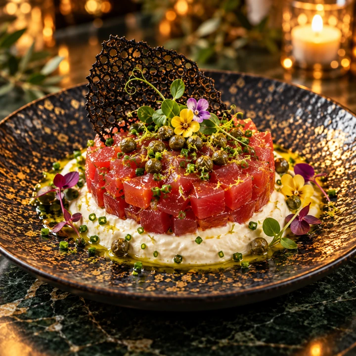
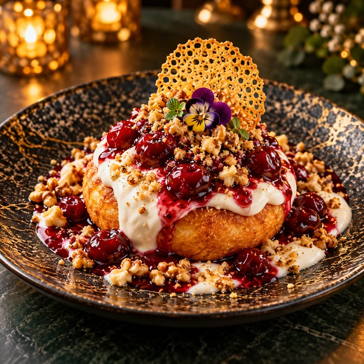

Două culturi.
O singură masă.
Cu totul altfel.
Gusturi care ne-au crescut.
Povești care ne aduc împreună.
Obrăjori împărătești.
Urmează-ți pofta.
Trei feluri de a descoperi Sciccheria.
Același gust pentru lucrurile făcute ALT·FEL.

✧
Meșteșug italian
Ne-am schimbat
felul de a spune
„poftă bună”.
Am luat gusturile cu care am crescut și le-am dat curajul să fie altfel. Le-am păstrat sufletul românesc și le-am îmbrăcat în tehnici moderne, texturi surprinzătoare și momente care se trăiesc la masă.
Din Italia am adus aluatul. Din România, gusturile care ne-au crescut. Le-am unit într-o poveste care începe în farfurie și continuă între oameni.
Bine ai venit la Sciccheria.Cinci momente.
O experiență.
Un parcurs de degustare prin universul ALT·FEL. Aceleași gusturi autentice, în diferite povești. Tu decizi ce vrei să descoperi.
- 01 Antreu reinterpretat
- 02 Primul fel memorabil
- 03 Fel principal de excepție
- 04 Preparatul surpriză
- 05 Un final dulce, altfel

UN FINAL DULCE. UN NOU ÎNCEPUT.Ne găsești aici.
Te așteptăm la masă.
O cină în doi, o masă cu prietenii sau un moment de sărbătorit.
Hai să scriem împreună următoarea poveste.
Sună-ne pentru o masă, detalii despre preparate
sau disponibilitatea unui eveniment.
Programul poate varia în zilele de sărbătoare.
Parcare privată, terasă și spațiu de joacă pentru copii. Pentru mese festive, evenimente și cerințe alimentare speciale, contactează echipa restaurantului.
Coșul online este în previzualizare. Pentru confirmarea unei rezervări sau disponibilității preparatelor, sună restaurantul.